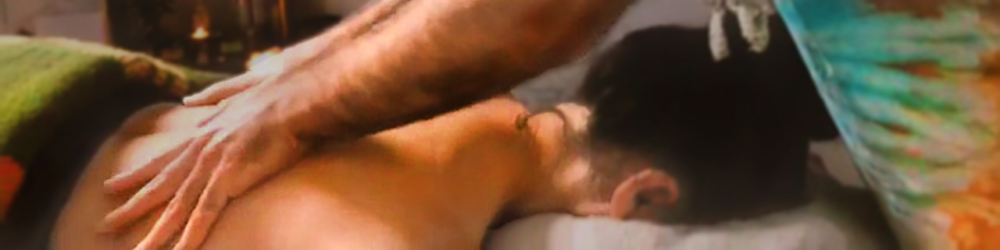

Masajes
El Masaje que realizo es una fusión de la Técnica Tuina y el Masaje deportivo, los cuales adapte a mi forma de trabajo en la que además del cuerpo físico me gusta trabajar la energía.
“Tui” y “Na” significan empujar y agarrar. Es la técnica de masaje más antigua que se conoce, de la cual derivan la mayoría de los masajes curativos orientales. Al igual que la acupuntura, actúa sobre los meridianos energéticos y los puntos específicos de éstos.
Algunos efectos benéficos que provee son:
- Equilibra el funcionamiento de nuestros órganos, tonificándolos o sedándolos.
- Relaja músculos y tendones, alivia dolores y contracturas.
- Armoniza nuestro sistema nervioso, obteniendo excelentes resultados con depresiones, ansiedad y problemas emocionales en general.
- Mejora la circulación sanguínea.
- Mejora la eliminación de toxinas dentro de los músculos.
- Armoniza la dispersión de la energía vital en el cuerpo.
Además, al masaje le incluí el uso de cuencos. Al comienzo de la sesión, para equilibrar los hemisferios cerebrales y abrir nuestra conexión y percepción; y al final, para alinear y equilibrar los chakras y todo lo que se haya movido a través del masaje.
Sumando a lo anterior, agregué la ventosa móvil, la cual actúa realizando un masaje inverso y al ser móvil no suele generar marcas en nuestra piel, a diferencia de las ventosas fijas.
La idea es que sea una sesión completa donde además de haber trabajado tu musculatura puedas irte en un estado de relajación y armonización de todos tus cuerpos: tanto el cuerpo físico como los cuerpos energéticos.
